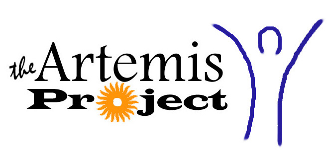

During the spring the coordinators get paid to organize the whole camp - recruit students, plan lunches, start course development, etc. Last spring we met for an hour and a half weekly, plus made one or two school visits each a week (to talk to students and get them to apply). We also spent some time on our own doing things like updating the webpage, making the brochure, emailing people, etc. During the summer it's a 9-5 for 8 weeks. We spent 3 weeks preparing lesson plans and getting everything ready and then 5 weeks actually doing the program. The great part about it is, you make the schedule. The coordinators have complete control over the program.
The knowledge you need is whatever you know. You need to understand fundamentals of programming. CS15 and CS16 or CS17 and CS18 will provide enough of that. (Of course, more experience is welcomed!) You just have to be willing to learn new things. There are plenty of people around to answer any question you might have. Michelle Engel did it two years ago after taking only CS17, 18, and 22. We're looking for people from a variety of backgrounds, so it's definitely worth applying.
There isn't any. Artemis is really about figuring out what you want to do and how you want to do it. Of course we'll be around as will coordinators from 2001 and 2000 to answer any questions. We frequently emailed the 2001 coordinators for suggestions and whatnot.
Pay is good. We received $1000 for the spring and $4000 for the summer.
Leah and I lived together in an apartment off campus as did Jen and Erika. It's really easy to find a summer sublet in the spring off the daily jolt.
Artemis was a ton of fun. We don't plan to do it again though. There are a few reasons for this: No coordinator has ever done it twice. This way different people get the opportunity to do it each year. Also, after junior year it is actually possible and very valuable to get really cool internships or research positions.